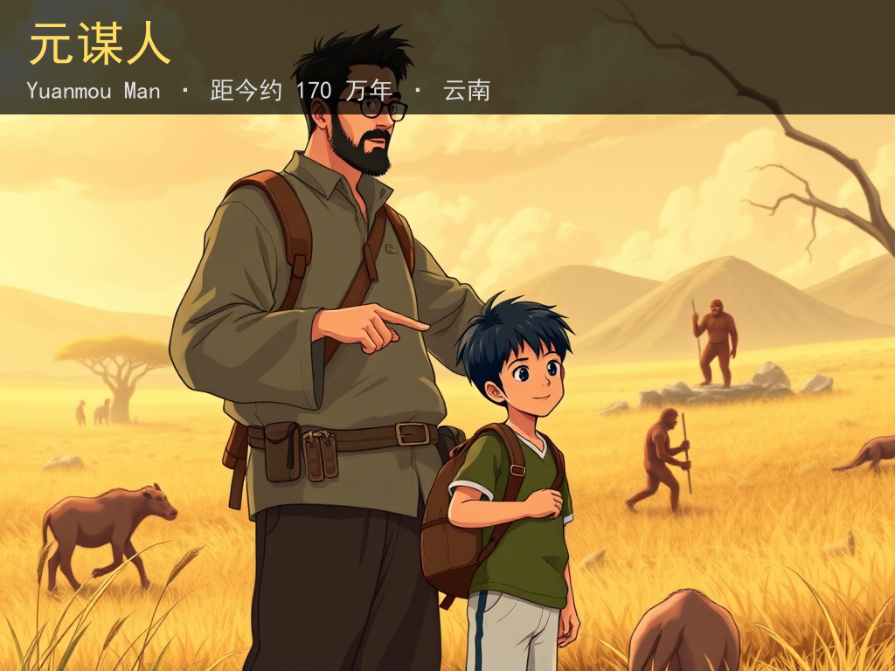
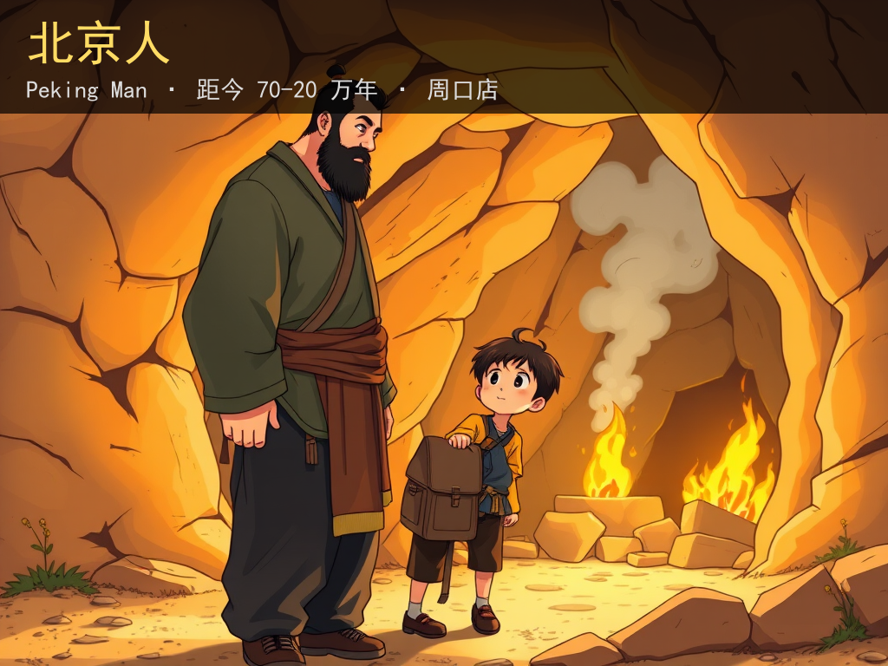
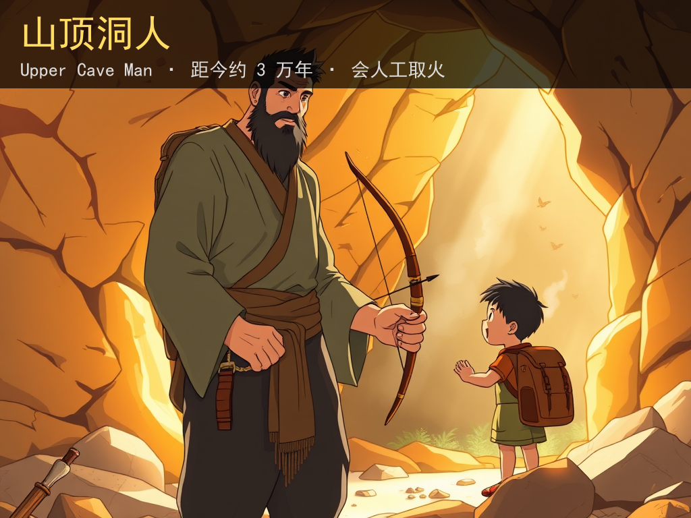
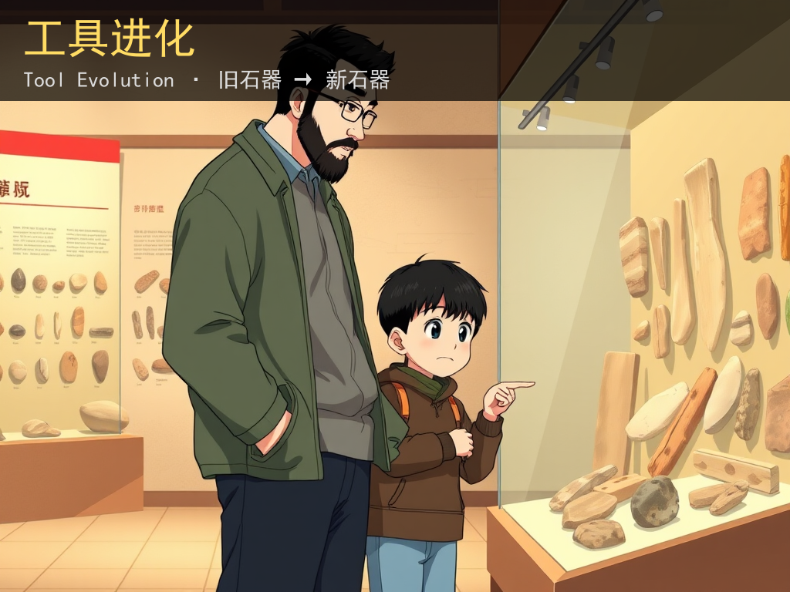
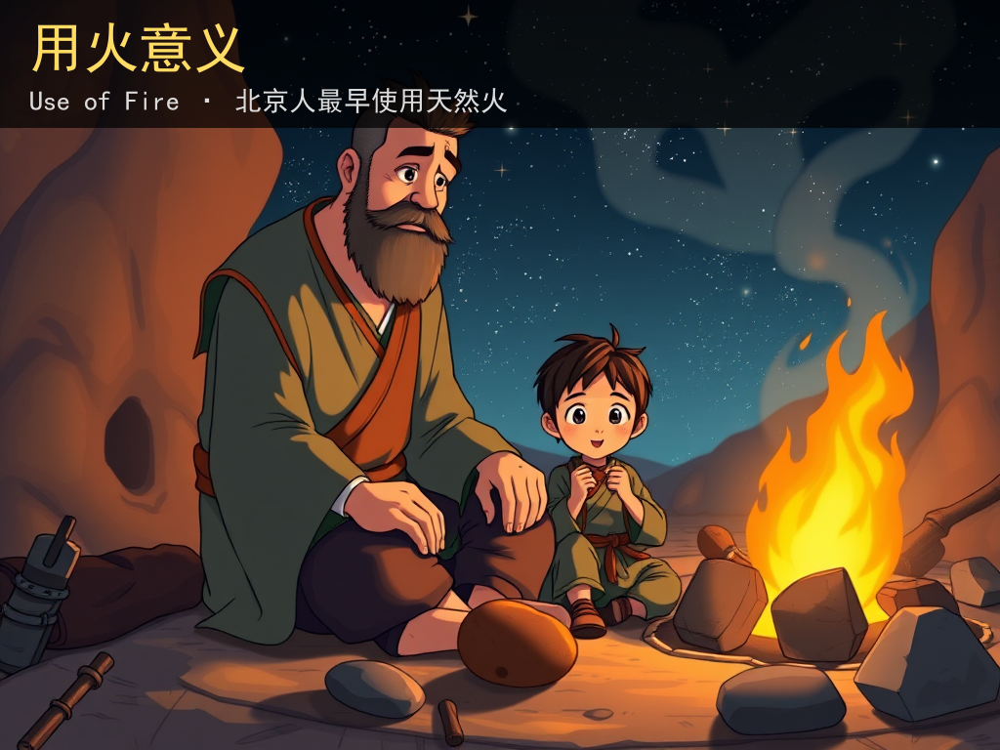

🌅 历史第一课
远古时期的人类活动 · 5 张图

卡 1 / 5
元谋人
距今约
170 万年
，在
云南省元谋县
被发现。
👉 中国境内已知
最早
的古人类。
核心字：
元
（头、首）
"元谋人" = 第一个
元
始
谋
生的人

卡 2 / 5
北京人
距今
70-20 万年
，在
北京周口店
。
👉 会使用
天然火
，能直立行走。
核心字：
京
（首都）
"北京人" = 在
北
方
京
城附近生活的人

卡 3 / 5
山顶洞人
距今约
3 万年
，会
人工取火
。
👉 已经按
氏族
生活，会做骨针缝衣服。
核心字：
洞
（洞穴）
"山顶洞人" = 住在山
顶
的
洞
里的人

卡 4 / 5
工具进化
旧石器：
打制
（敲打成型）
新石器：
磨制
（磨光成型）
👉 工具越做越精细，人类越变越聪明。
核心字：
器
（器具）
"石器" = 石头做的
器
具

卡 5 / 5
用火的意义
🔥 北京人：使用
天然火
（雷电、山火）
🔥 山顶洞人：掌握
人工取火
👉 火 = 吃熟食 + 驱寒 + 吓野兽
核心字：
熟
（食物煮熟）
"熟食" = 加了火
熟
过的食物
🎤 开始讲给 AI 大一新生听
📋 复制这段话发给 AI（大一新生扮演）
接下来我要给你讲解【 】这个概念。 请你扮演一个完全没有相关背景的大一新生。规则如下： 1. 我讲完后，你只能用我讲过的内容复述一遍，不许补充你自己知道的东西。 2. 如果我讲得有跳跃、有术语没解释、逻辑不通，直接打断问我。 3. 每轮最多问 3 个问题，只问最关键的。 4. 不要夸我。
✅ 我讲完了
👉 分享给同学家长
📤 发到朋友圈